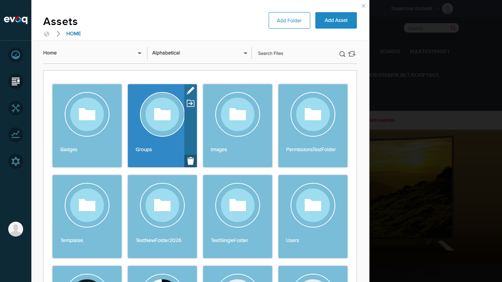
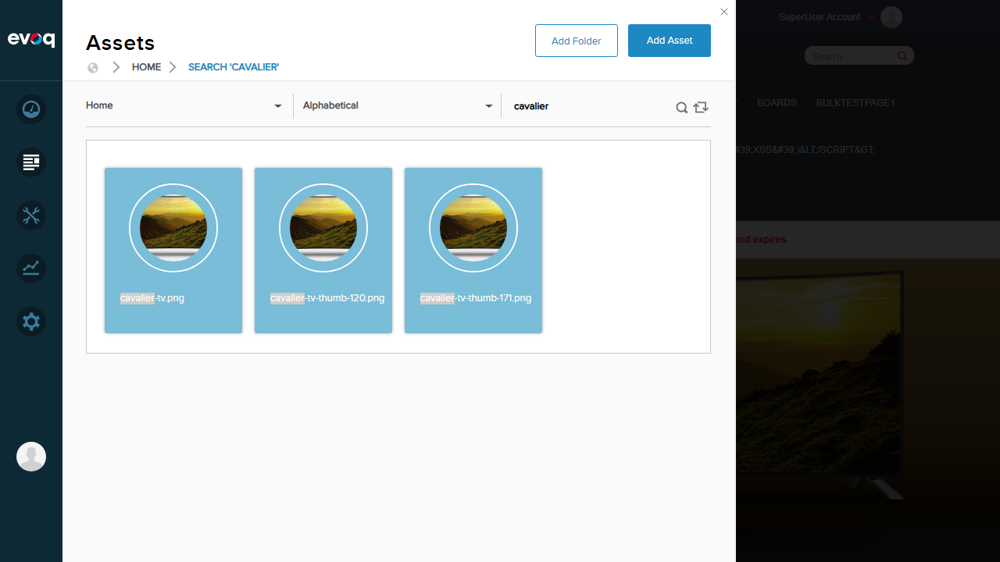
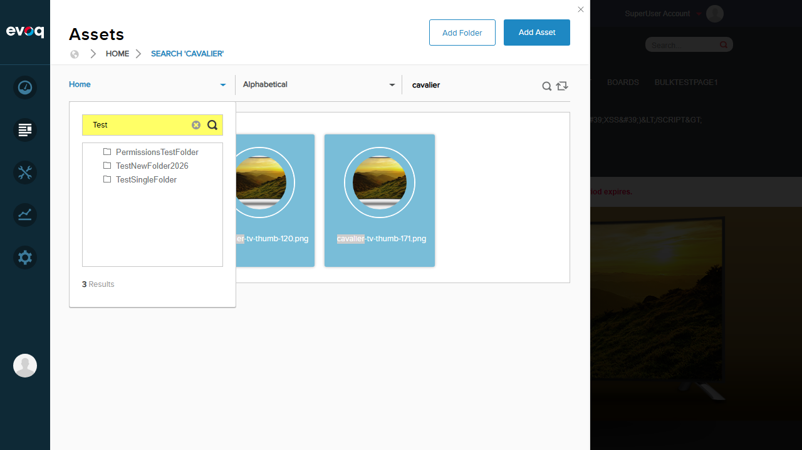
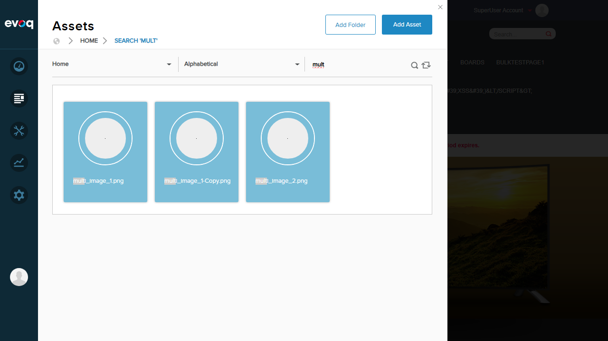
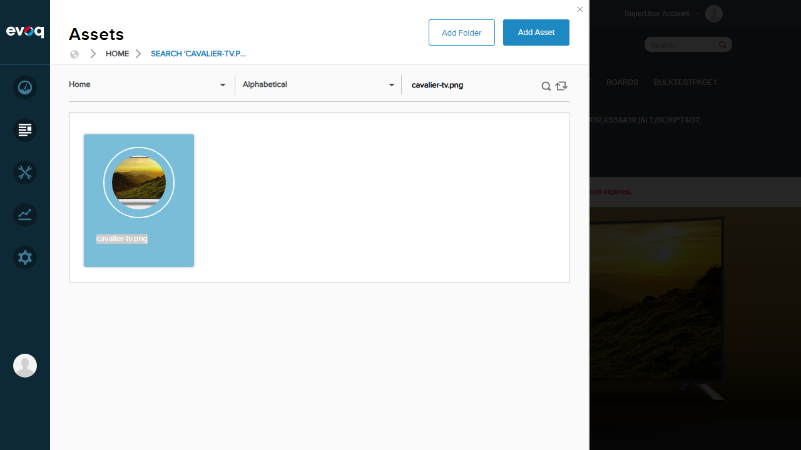
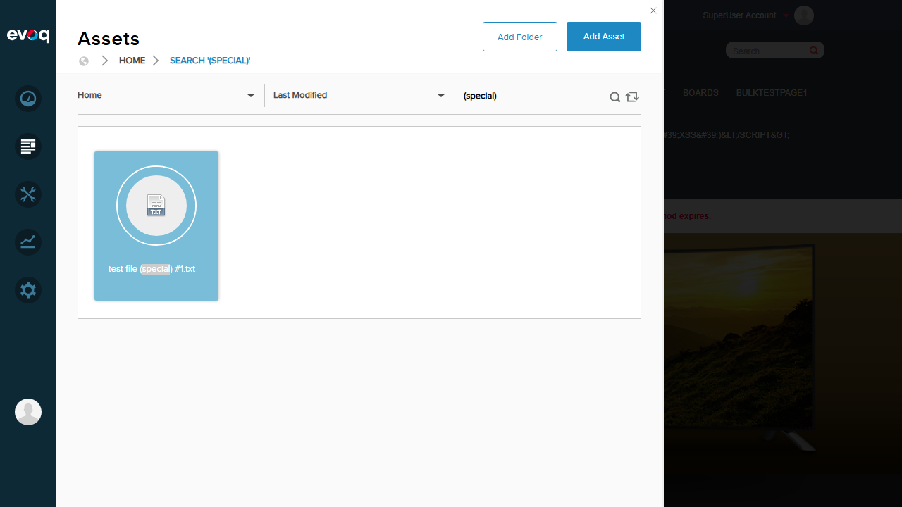
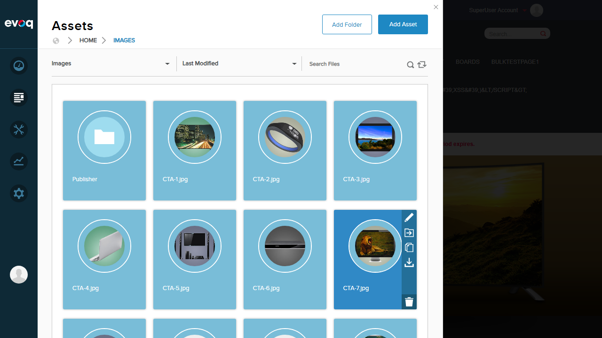
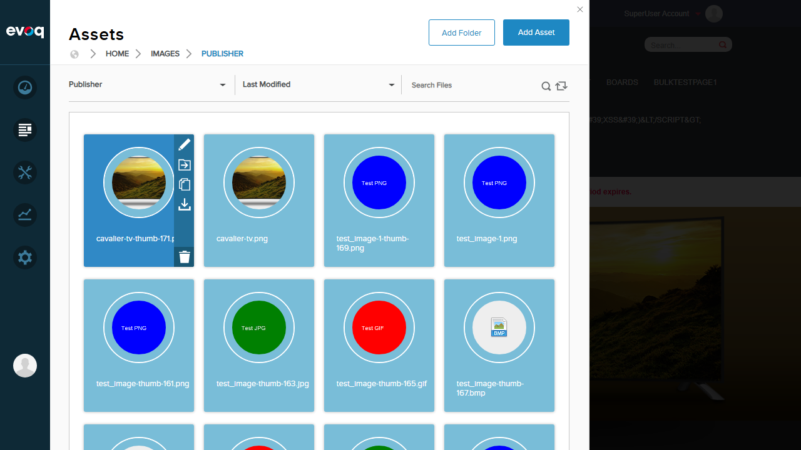
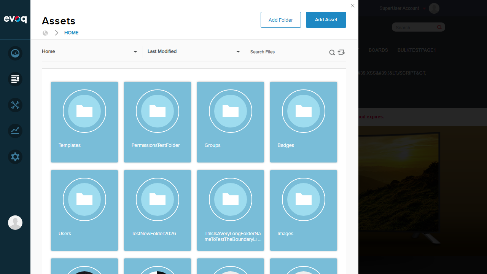

Test Report: Search and Navigation
Extension: Evoq.PersonaBar.Assets
Feature: Search and Navigation
Priority: High
Test Date:
Environment: http://localhost:8081
Browser: Chromium (1280x720)
Test Summary
10
Tests Passed
0
Tests Failed
100%
Pass Rate
2
Observations
Test Results
| # | Test Scenario | Description | Status |
|---|---|---|---|
| 1 | Search files by name | Searched for "cavalier" - found 3 matching files (cavalier-tv.png, cavalier-tv-thumb-120.png, cavalier-tv-thumb-171.png) | PASS |
| 2 | Search folders by name | Searched for "Test" in folder navigation - found 3 matching folders (PermissionsTestFolder, TestNewFolder2026, TestSingleFolder) | PASS |
| 3 | Partial text search | Searched for "mult" (partial term) - found 3 matching files (multi_image_1.png, multi_image_1-Copy.png, multi_image_2.png) | PASS |
| 4 | Full text search | Searched for complete filename "cavalier-tv.png" - found exactly 1 matching file | PASS |
| 5 | Sort A-Z (Alphabetical) | Verified items sorted alphabetically - folders displayed as Badges, Groups, Images, PermissionsTestFolder, Templates, etc. | PASS |
| 6 | Sort by date (Last Modified) | Changed sort to "Last Modified" - order changed to Templates, PermissionsTestFolder, Groups, Badges, etc. | PASS |
| 7 | Pagination | Verified multiple items loaded successfully (8 folders + 16+ files displayed via pagination/lazy loading) | PASS |
| 8 | Search with special characters | Searched for "(special)" with parentheses - found "test file (special) #1.txt" | PASS |
| 9 | Navigate folder hierarchy (drill down) | Navigated Home > Images > Publisher (3 levels deep) - breadcrumb updated correctly | PASS |
| 10 | Navigate folder hierarchy (breadcrumb back) | Clicked HOME breadcrumb to navigate back to root - returned to Home folder successfully | PASS |
Observations
- Sort Z-A: Not available in the UI. The sort dropdown only provides: Last Modified, Date Uploaded, Alphabetical. Reverse alphabetical (Z-A) sorting is not exposed in the interface.
- Sort by Size: Not available in the UI. File size sorting is not implemented in the current sort options.
Screenshots
Step 1: Assets Panel Initial View
Assets panel showing folders and files with search box and sort dropdown

Step 2: Search Files by Name
Search for "cavalier" returns 3 matching files with highlighted search term

Step 3: Search Folders by Name
Folder search for "Test" returns 3 matching folders in the folder tree

Step 4: Partial Text Search
Partial search "mult" finds files starting with "multi_"

Step 5: Full Text Search
Full filename search "cavalier-tv.png" finds exact match

Step 6: Sort Alphabetical (A-Z)
Items sorted alphabetically - Badges, Groups, Images, etc.
Step 7: Sort by Last Modified
Items sorted by last modified date - different order than alphabetical

Step 8: Pagination - Items Displayed
Multiple items loaded via pagination (8 folders + files visible)
Step 9: Search with Special Characters
Search "(special)" finds file with special characters in name

Step 10: Navigate to Images Folder
Navigated into Images folder - breadcrumb shows HOME > IMAGES

Step 11: Navigate to Publisher Subfolder (3 levels deep)
Navigated to Publisher subfolder - breadcrumb shows HOME > IMAGES > PUBLISHER

Step 12: Breadcrumb Navigation Back to Home
Clicked HOME in breadcrumb - successfully returned to root folder

Code References
| Feature | File | Location |
|---|---|---|
| Search API | AssetsController.cs | Line 218-240 - Search method using SearchController.Instance.SearchFolderContent() |
| Folder Content / Pagination | AssetsController.cs | Line 196-216 - GetFolderContent with startIndex, numItems parameters |
| Sort Implementation | AssetsController.cs | Line 1132-1143 - ApplySort method (sortOrder 1=A-Z, 2=Z-A) |
| Folder Search | AssetsController.cs | Line 766-775 - SearchFolders method |
| Folder Navigation | AssetsController.cs | Line 242-262 - GetFolderPath method |
Conclusion
All 10 test scenarios passed successfully. The Search and Navigation feature of Evoq.PersonaBar.Assets is functioning correctly:
- File and folder search works with partial and full text matching
- Special characters in search terms are handled properly
- Sorting by Alphabetical and Last Modified works correctly
- Pagination/lazy loading displays items properly
- Folder hierarchy navigation with breadcrumbs works in both directions
Note: Sort Z-A and Sort by Size options are not available in the current UI implementation.